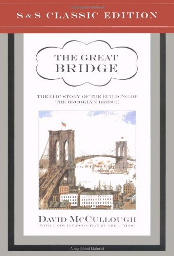

The Great Bridge: The Epic Story of the Building of the Brooklyn Bridge
- Read on 2024-05-30
- Rating: ️️️️️
- Format: üéß (27 hours 24 minutes)
McCullough once again was able to make me care about something I didn't care about before. The context for the building of the bridge was fascinating. The significance of the bridge for the city, and the immigrants was amazing. This was a great book.
In 2019 I visited New York for the first time. I made a point of walking the bridge. I cried as I walked across the bridge, thinking of those people who made a similar walk, but to a new beginning. I have artwork of this bridge hanging in my home. This book made a lasting impression on me.
- Prior: The Autobiography of Malcolm X
- Next: Heart of the Matter